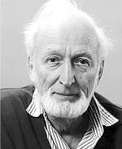

McGregor Hone was born in Prince Albert in 1920. He lived in Saskatoon, Vancouver and Copper Mountain. Mac earned his BA and certificate of education at the University of Saskatchewan in 1941. During the war, Mac welded Victory ships at North Vancouver Shipyards. In 1947 he began a CenArts program at Regina's Central Collegiate. This visual arts program was one from which many successful artists graduated. He remained there until his retirement in 1979. Hone was also involved in other organizations in his community, including the Saskatchewan Teachers' Federation, the Regina Community Clinic, and Regina's Unitarian Fellowship. After Hone's retirement in 1979, he and Beth moved to Lumsden, Saskatchewan. They both continued to be active in their art and in the community. In 1995, Hone received a Lifetime Award for Excellence in the Arts from the Saskatchewan Arts Board. McGregor Hone passed away in 2007.